Lecture 23: Data version control I
![]()
Centre for Advanced Research Computing
Introduction
This lecture is part of series on Data Version Control (DVC), a way of systematically keeping track of different versions of models and datasets.
This first lecture in the series will cover:
- Why using DVC is a good idea.
- How to track files and move between versions.
Learning outcomes
- Recognize the need for version control when working with code and data files.
- Explain how version control systems like Git track changes.
- Compare the use of Git and DVC for working with data files.
- Apply DVC to track changes to data files.
Why do we need version control?

What is version control
Instead of having multiple copies or working on a shared version:
- track changes in distinct stages (commits) as you work,
- move backwards and forwards in history,
- explore different alternatives (branches),
- share entire history with others.
Different systems: Git, Subversion, Mercurial, …
Tracking changes
We start our work with by committing the state of our code or data. Each commit we create is given a unique identifier:

Tracking changes
As we work, we make more commits:

Tracking changes
Sometimes we make mistakes:

Tracking changes
After realising the error, we can go back and fix it, replacing it with a new commit:

Tracking changes
Often, we want to try out different approaches before we decide on what’s best:

Tracking changes
This results in a non-linear history. If we want, we can also merge the two branches:

Why data version control?
Similar principles apply to data workflows as to code:
- Mistakes happen!
- New data appearing.
- Try variants of model (e.g. algorithm or its parameters) or data pipeline (e.g. preprocessing).
Why data version control?
Git is not only for source code files. However, a dedicated data-focused solution is more attractive:
- Git does not handle very large files efficiently.
- Thinking in terms of data workflows offers new useful functionality, e.g. reproducibility, metrics.
- Better integration with remote data providers, e.g. Amazon Web Services S3.
- Can still use Git under the hood, keeping code and data versioned simultaneously.
Getting started with DVC
DVC is a command-line application that runs on any platform. Follow the installation instructions to get it on your computer.
To follow along, first create a new directory and switch it to be the current working directory by running
in a terminal.
This walkthrough is based on the official tutorial.
Initializing project
First, initialize your directory as a DVC (and Git) repository to allow tracking changes:
hint: Using 'master' as the name for the initial branch. This default branch name
hint: will change to "main" in Git 3.0. To configure the initial branch name
hint: to use in all of your new repositories, which will suppress this warning,
hint: call:
hint:
hint: git config --global init.defaultBranch <name>
hint:
hint: Names commonly chosen instead of 'master' are 'main', 'trunk' and
hint: 'development'. The just-created branch can be renamed via this command:
hint:
hint: git branch -m <name>
hint:
hint: Disable this message with "git config set advice.defaultBranchName false"
Initialized empty Git repository in /tmp/RtmpfyZzQW/dvc-example-1ff7b1121f4/.git/
Initialized DVC repository.
You can now commit the changes to git.
+---------------------------------------------------------------------+
| |
| DVC has enabled anonymous aggregate usage analytics. |
| Read the analytics documentation (and how to opt-out) here: |
| <https://dvc.org/doc/user-guide/analytics> |
| |
+---------------------------------------------------------------------+
What's next?
------------
- Check out the documentation: <https://dvc.org/doc>
- Get help and share ideas: <https://dvc.org/chat>
- Star us on GitHub: <https://github.com/treeverse/dvc>Initializing project
After the above, DVC creates some new files and gives a hint about what to run: You can now commit the changes to git.
[master (root-commit) 5cf1417] Initial setup
3 files changed, 6 insertions(+)
create mode 100644 .dvc/.gitignore
create mode 100644 .dvc/config
create mode 100644 .dvcignoreDownloading data
Download a sample data file by running
This should create a directory called data in your new directory, with a file called data.xml inside it.
.
└── data
└── data.xml
2 directories, 1 fileInitializing tracking
We are not tracking any files yet. Let’s tell DVC to track the dataset we downloaded:
To track the changes with git, run:
git add data/data.xml.dvc data/.gitignore
To enable auto staging, run:
dvc config core.autostage trueAs before, DVC creates some internal files and tells us what to commit with Git.
Initializing tracking
Run the command it suggests, and then commit:
[master 9b8d7ae] Add initial version of dataset
2 files changed, 6 insertions(+)
create mode 100644 data/.gitignore
create mode 100644 data/data.xml.dvcInitializing tracking
Note that this is different from the usual Git workflow.
Normally, we would be adding the data file itself (data.xml).
Instead, we are adding a smaller “proxy” file (data.xml.dvc).
This file is much smaller, and DVC knows it represents the original dataset.
Initializing tracking
To verify the size difference, run
total 14M
-rw-r--r-- 1 runner runner 14M Mar 13 08:27 data.xml
-rw-r--r-- 1 runner runner 92 Mar 13 08:27 data.xml.dvcThe original data takes up 14MB, while the proxy file is only ~100 bytes long.
Making changes
During the course of our work, the dataset may change - intentionally or by accident. For simplicity, we will simulate a change by repeating the dataset twice:
We can check the size of the file with
total 28M
-rw-r--r-- 1 runner runner 28M Mar 13 08:27 data.xml
-rw-r--r-- 1 runner runner 92 Mar 13 08:27 data.xml.dvcto verify it has doubled.
Making changes
To register the changes with Git and DVC, we run similar commands to before:
To track the changes with git, run:
git add data/data.xml.dvc
To enable auto staging, run:
dvc config core.autostage true
[master 4c007fd] Double size of dataset
1 file changed, 2 insertions(+), 2 deletions(-)Switching versions
Switching to another version happens in two stages.
First, we switch with Git. In Git HEAD refers to the current commit and a ~ suffix indicates the parent of a commit.
Note: switching to 'HEAD~'.
You are in 'detached HEAD' state. You can look around, make experimental
changes and commit them, and you can discard any commits you make in this
state without impacting any branches by switching back to a branch.
If you want to create a new branch to retain commits you create, you may
do so (now or later) by using -c with the switch command. Example:
git switch -c <new-branch-name>
Or undo this operation with:
git switch -
Turn off this advice by setting config variable advice.detachedHead to false
HEAD is now at 9b8d7ae Add initial version of datasetSwitching versions
Then we “synchronise” the files under DVC with
M data/data.xmlThis will find the version of the data when that commit was made, and check it out.
Verify that the version changed with
total 14M
-rw-r--r-- 1 runner runner 14M Mar 13 08:27 data.xml
-rw-r--r-- 1 runner runner 92 Mar 13 08:27 data.xml.dvcNotice data.xml is back to its original size.
Switching versions
Go back to the newest version (doubled data) with
error: pathspec 'main' did not match any file(s) known to gitSummary
In this lecture we have covered has been the basic usage of Git and DVC to track and revert changes to a file.
Building on this, in the next lecture we will see how DVC can be used to track models and entire machine learning workflows.